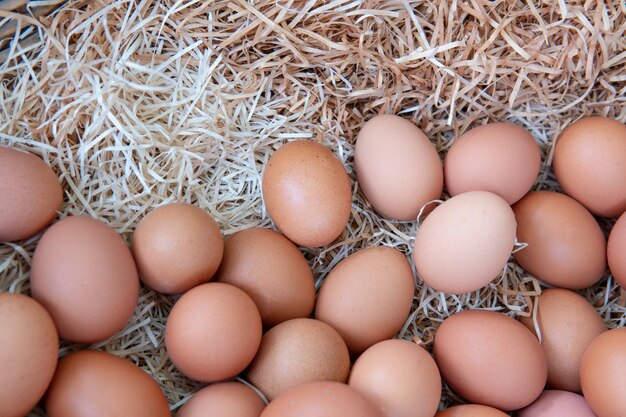
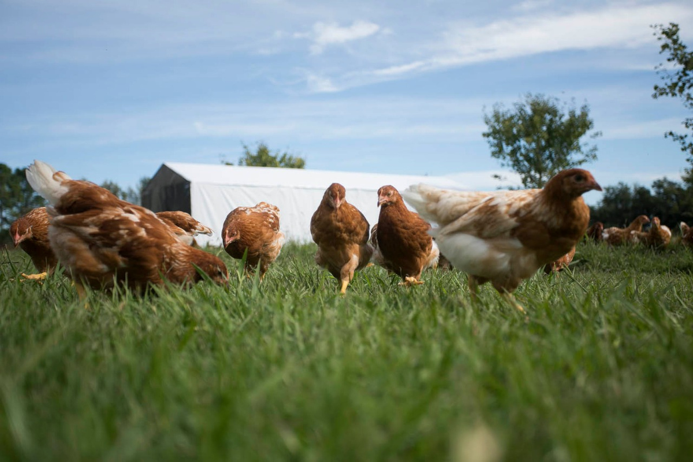
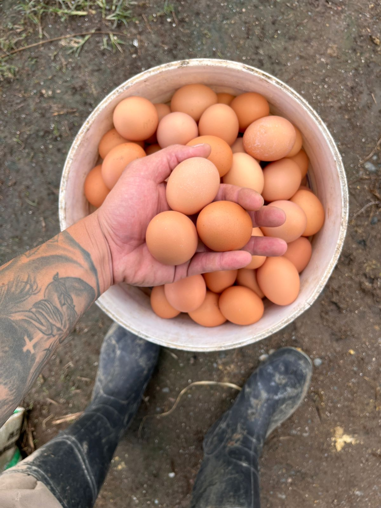
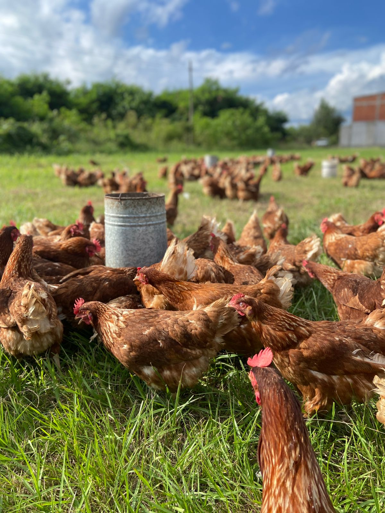
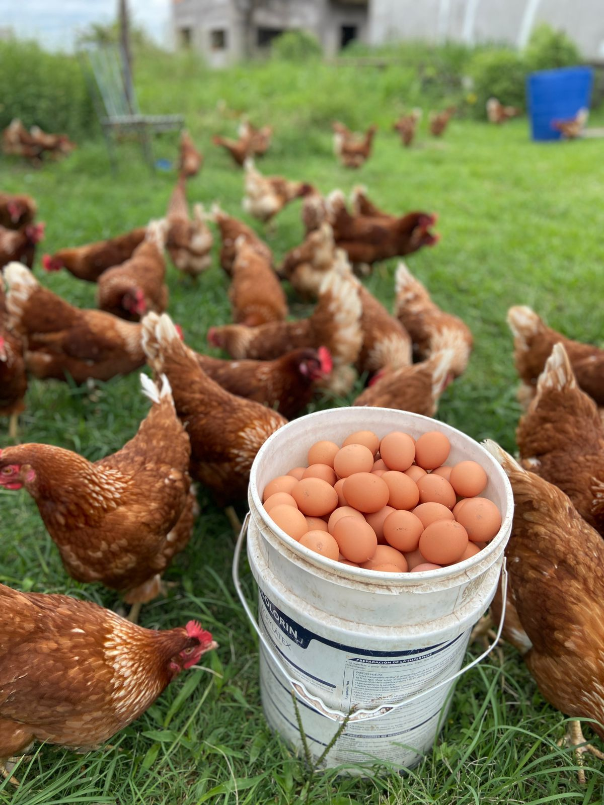

Frescura real, sin químicos, con el sabor de antes.
Nuestra diferencia está en el origen y el respeto por la naturaleza.
Nuestras gallinas pastorean libremente todos los días, viviendo sin estrés.
Dieta 100% vegetal y natural, basada en maíz, pasturas y semillas.
Cero hormonas y cero antibióticos preventivos. Pureza garantizada.
Yema de color intenso y clara firme. El verdadero sabor a campo.

Recolección diaria artesanal para garantizar la máxima frescura en tu mesa. Huevos de tamaño grande, cáscara resistente y un valor nutricional superior al huevo industrial.
Transparencia total en nuestro proceso de producción.
Respetamos los ciclos biológicos de nuestras aves.
Seleccionamos a mano los mejores huevos cada mañana.
Revisión minuciosa para asegurar la perfección.
Del campo a tu casa en menos de 48 horas.
Granja Jalú nació de un sueño familiar: volver a las raíces y ofrecer un alimento noble, real y nutritivo. Cansados de los productos ultraprocesados, decidimos crear un refugio donde la naturaleza manda.
Nuestra misión no es producir en masa, sino producir con excelencia. Cada huevo que llega a tu mesa es el resultado de un trabajo artesanal, hecho con amor, respeto por los animales y compromiso con la salud de tu familia.


Seguinos en Instagram para ver nuestro día a día @granja_jalu


Todo lo que necesitás saber sobre nuestros huevos orgánicos.
Sí, hacemos entregas programadas sin cargo en el centro y alrededores. Para otras zonas, consultá por WhatsApp y coordinamos. Entregamos los días martes y viernes para asegurar frescura.
Nuestros huevos se recolectan el mismo día del envío. Al no estar sometidos a procesos industriales de lavado que quitan su capa protectora natural, pueden durar hasta 30 días a temperatura ambiente en un lugar fresco, o más tiempo en la heladera.
El color de la yema refleja la dieta natural de nuestras gallinas, rica en pasto fresco, maíz y semillas. A diferencia de los huevos industriales, no usamos colorantes artificiales. Por eso, según la estación del año y lo que picoteen, vas a notar tonos amarillos y anaranjados únicos.
Hacé tu pedido hoy y recibí la frescura del campo en la puerta de tu casa.
Hacer un Pedido Ahora